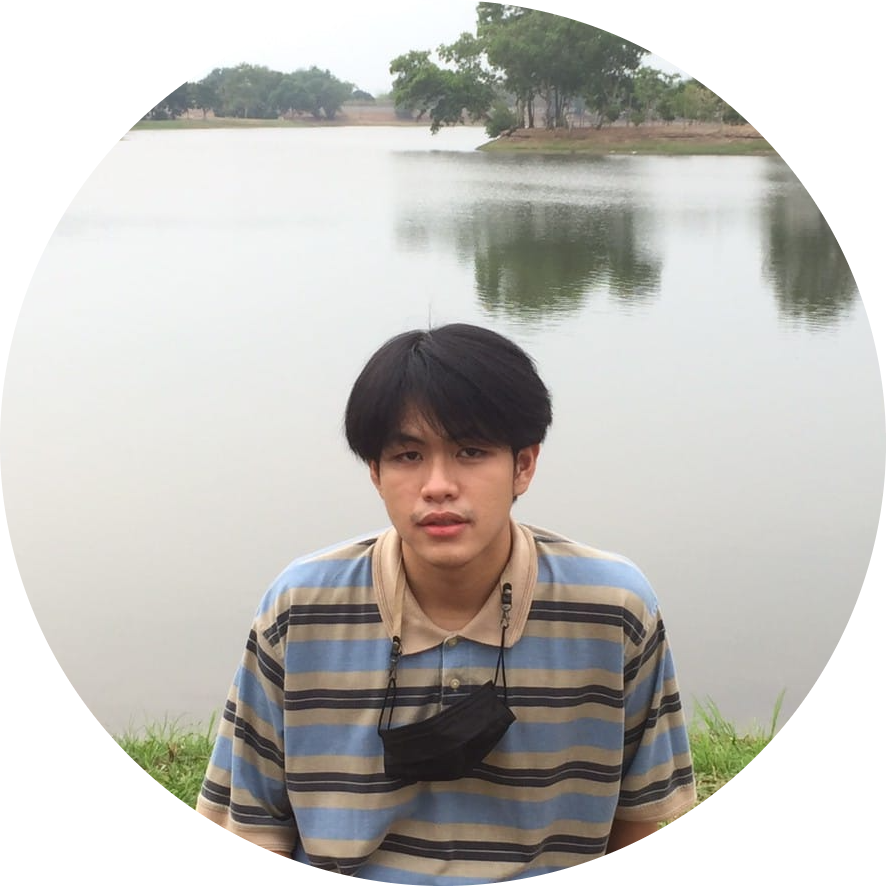

About meHi I'm Loetworawit Hongsanga ชื่อเล่น เอิร์ธ จบการศึกษาระดับชั้นมัธยมปลายจากโรงเรียนธรรมศาสตร์คลองหลวงวิทยาคม ปัจจุบันกำลังศึกษาอยู่ที่มหาวิทยาลัยกรุงเทพปีที่2คณะวิศวกรรมศาสตร์สาขามัลติมีเดีย ชื่นชอบการเรียนออกแบบด้วยโปรแกรม 3D ต่างๆ เช่น Sketchup Maya เพราะเป็นคนที่ชื่นชอบผลงานศิลปะอยู่แล้ว ชอบแต่งตัว ชอบไลฟ์สไตล์ยุค50's-80's เป็นพิเศษ เป็นคนไม่ค่อยเข้าสังคมแบบรวมกลุ่มใหญ่ๆสักเท่าไหร่ แต่เป็นคนที่เฟรนลี่รู้จักคนง่าย ในอนาคตอยากศึกษาด้าน 3D Design ให้เก่งเป็นพิเศษ Website: GlurGeek.com Email: loetworawit.hong@bumail.net |
 |
DetailsName: Loetworawit hongsanga Location: Thailand Social Media: |
|---|